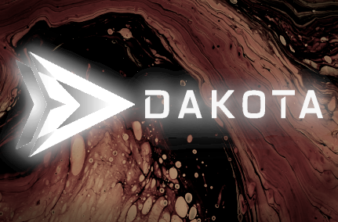

Version 6.18 - Oil Drum Alley (2023/05)
Version 6.18 of the Dakota GUI contains several exciting new features, including remote job submission capabilities.
Job Submission
The Dakota GUI now has the ability to submit jobs to remote machines (such as high-performance computers). The Dakota GUI supports machines that use job queues (using scheduling software such as Slurm), as well as more general-purpose high-performance computers.
Significant care has been taken to highlight “best practices” for new users wishing to exercise job submission capabilities. In addition to new documentation added to the Dakota User’s Manual, the GUI’s job submission capabilities are clearly demonstrated through new example projects that can be checked out from the Dakota examples repository.
You can use nodes available in Next-Gen Workflow to perform the remote job submission, such as the RemoteNestedWorkflow node, or (in the case of queued job submission) the DakotaQueueSubmit node.
Additionally, Dakota GUI is also outfitted with a Job Submission run configuration that allows you to submit jobs through the classic Eclipse-based run configuration framework; however, this option is less flexible than using NGW, and new users are encouraged to favor NGW (especially if you are not located at Sandia National Laboratories).
New Parameter/Response File Wizard
A new wizard has been added to assist users with setting up simple text-based files that specify lists of input parameters and output responses for simulation models. The wizard allows you to specify this information using either JSON, YAML, or INI format. Once this parameter/response file has been created, it can be used throughout the GUI to communicate model requirements (for example, initializing new Dakota analysis driver workflows, or providing variables and responses to a new Dakota study in the New Dakota Study wizard).
You can read more about this new wizard here.
Note: This wizard is intended to replace the need to use BMF files (more on the deprecation of BMF below).
Better Shortcuts Throughout
Users now have the ability to make NGW-enabled run configurations for Dakota, via the “Dakota (Workflow)” run configuration option. This alleviates the need to wrap Dakota in an outer workflow if the Dakota study’s analysis driver is itself an NGW workflow. Additionally, this run configuration allows users to specify default values for pre-processing fields as part of the run configuration. You can read more about this new option here.
The New Wrapper Workflow wizard will now create additional NGW parameter nodes for each piece of pre-processing that appears in the Dakota input file you submit to the wizard. This wizard provides the same level of pre-processing flexibility as the “Dakota (Workflow)” run configuration described above.
Users can use the New Dakota Project wizard to directly import from the Dakota examples repo, thanks to an additional second page added to the wizard.
Bugfixes
The NGW Dakota node is now more resilient to pathing problems if Dakota’s bin directory is absent from the system path. The Dakota node is now capable of locating associated programs (such as pyprepro) in the Dakota bin directory, even if the bin directory is not on the system path.
Fixed a bug with regards to Chartreuse screenshot generation, as well as a bug that made bad assumptions about under what circumstances Chartreuse should access online plotly.js resources by default.
Deprecation Note: XStream
Going forward, the Dakota GUI is automatically altering the format of the following file types: .plot, .iwf, .im
Internally, these file types contain serialized object data stored in XStream’s XML format. Going forward, we will be using the Gson library
to serialize object data to JSON format.
No immediate action is required on your part. Versions 6.18 and 6.19 of Dakota GUI will automatically convert these files from XML to JSON as soon as they are opened and saved. However, version 6.20 and newer will only work with JSON format, so make sure you convert any files you want to keep beyond that point.
To assist with the conversion process, you may wish to use a batch file-converting utility which was added to version 6.18 of Dakota GUI. To access it, right-click a top-level project in the GUI’s Project Explorer file tree, and choose “Convert XStream files to JSON files.” (This utility is only equipped to convert .plot and .im files, however. If you have any .iwf files containing serialized XML data, you must manually open the nodes themselves in the Settings Editor and then re-save the workflow.)
Contact the Dakota GUI development team if you experience any problems or data loss after your files have been converted.
Deprecation Note: New Script-Based Driver Wizard
The New Script-Based Driver wizard has been retired, in order to promote Next-Gen Workflow as the preferred way to design analysis drivers in Dakota GUI.
However, the Python driver script and qoi.py library that were designed to go with this wizard are preserved in the examples repository, located at
dakota-examples/official/gui/analysis_driver_tutorial/complete_python_driver. This example should still work out of the box, provided you have previously
installed Python 3.
Deprecation Note: BMF (Basic Model Format)
The BMF (Basic Model Format) file type has been retired, due to a lack of interest. Legacy .bmf files can still be read, but no new .bmf files may be created. Users are encouraged to use the New Parameter/Response File Wizard to specify their model’s input parameters and output responses in either JSON, YAML, or INI format.